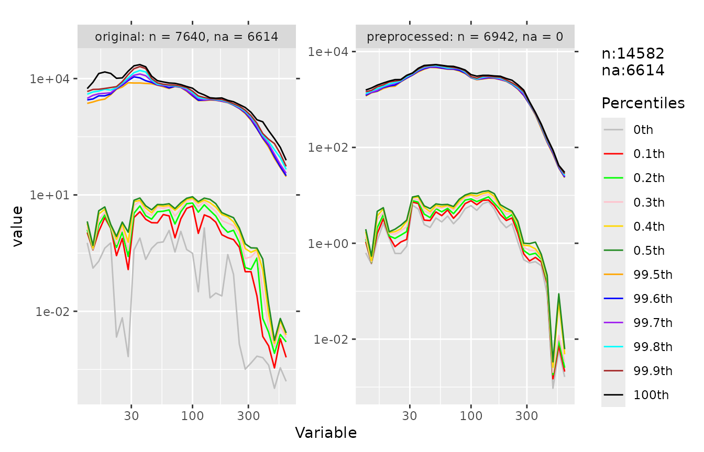
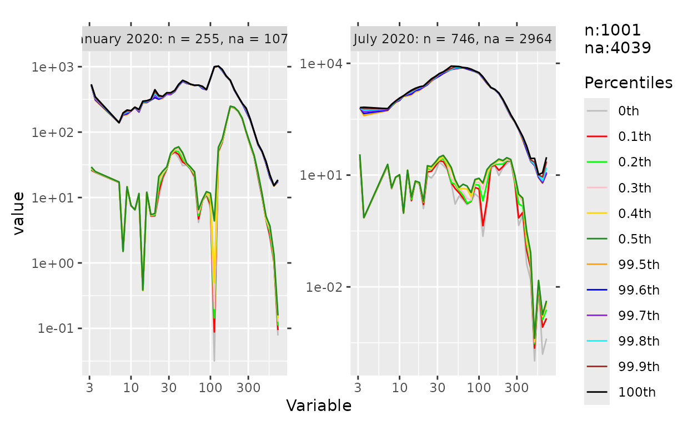
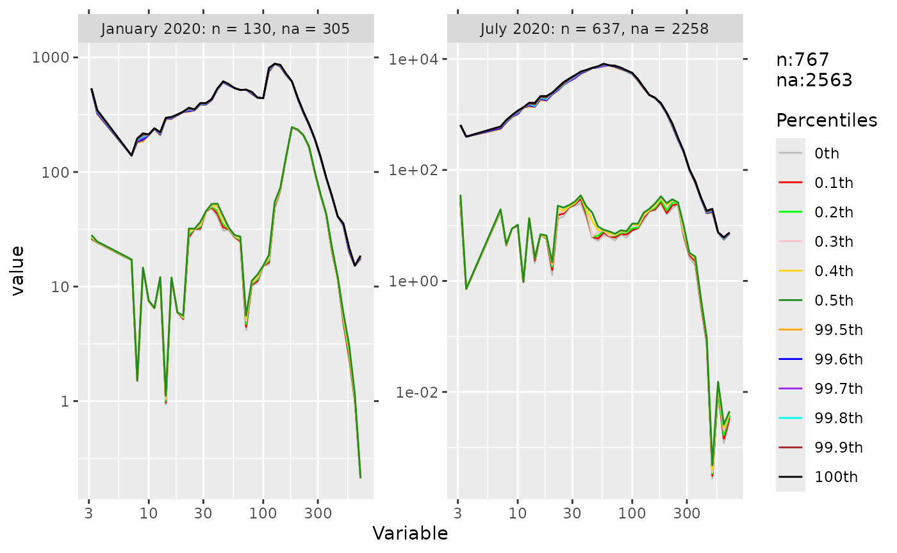

library(dataprep)
set.seed(1)
# The size-bin columns are the ones whose names are numeric
# (1.00, 1.12, ..., 1000). This helper returns their integer
# positions, excluding the four non-size columns (`date`,
# `tconc`, `TPNC`, `monthyear`).
size_bin_cols <- function(x) {
grep("^[-+]?[0-9]*\\.?[0-9]+$", names(x))
}Quick start
The full data table has 7,640 rows and 65 columns: a
time column, a grouping column, and 61 particle size bins. Running the
full pipeline on it takes a few seconds and returns a smaller, cleaner
table.
The cleaning pipeline is organised around four sequential steps, each addressing a distinct failure mode of high-resolution environmental data:

Variable deletion. Drop size bins whose missing fraction exceeds a threshold, so downstream interpolation never has to extrapolate from far-away anchors.
Observation deletion. Drop rows whose selected columns contain a consecutive missing run longer than
halfminutes on both sides. This guarantees every remaining point has a trustworthy anchor withinhalfminutes.Conditional extremum outlier removal. A single value can be a global maximum and still be legitimate, or vice versa.
condextr()judges each candidate in context. Unlike a one-shot percentile cutoff, it removes fewer legitimate values and leaves no artificial outliers behind.Short-period grouping interpolation. After steps 1–3, remaining
NAs sit inside short gaps with a valid anchor withinhalfminutes.shorvalu()interpolates within each short segment only. Interpolating across a long gap silently mixes two physically distinct regimes and can create new outliers at the segment boundary; grouping by short segments keeps the interpolation local.
cleaned <- dataprep(data,
cols = size_bin_cols(data),
group = 4,
interval = 10,
times = 10,
intervals = 30,
cores = 1L)
dim(cleaned)
#> [1] 6942 39The figure below compares the top and bottom percentile curves of
every size bin before and after preprocessing. The label inside each
facet reports the number of observations (n) and the number
of missing values (na) in that group.
percplot(
rbind(
transform(data[names(cleaned)], g = "original"),
transform(cleaned, g = "preprocessed")
),
cols = size_bin_cols(cleaned),
group = ncol(cleaned) + 1
)
The preprocessed curves are visibly tighter: the extreme tails are
shorter, the interquartile band is narrower, and the number of missing
values (na) drops dramatically because whole rows with long
consecutive gaps have been removed. The remaining NAs are
in gaps that are too long for shorvalu to interpolate.
Note on
data1.data1is the already-aggregated seven-column version of the same dataset. It has very few missing values and no long gaps, so it is not a useful input for the cleaning pipeline. Usedatafor anything that modifies values; usedata1only for read-only demos (descdata,na_diagnose,percdata,percplot,descplot).
Overview
The 0.1.7 cleaning pipeline consists of four sequential steps:
Variable deletion (
varidele): drop columns whose missing fraction is above a threshold.Observation deletion (
obsedele): drop rows with a run of consecutive missing values longer thanhalfon both sides.Outlier removal (
condextr): point-by-point weighted conditional extremum; alternatives includepercoutlfor traditional percentile removal anddetect_outliersfor IQR / MAD masks.Short-period interpolation (
shorvalu): fill remaining short gaps from nearby valid values.
Steps 1–4 are wrapped by dataprep() for one-call use.
Every step is designed around the same physical constraint: a valid
substitute for a missing value only exists if there is an observed value
within half minutes on at least one side.
Why obsedele changed in 0.1.7
Two behaviour changes were made in 0.1.7; both are bug fixes, but they change row counts on real data.
Change 1 — each column is scanned independently. The
0.1.5 implementation collapsed all selected columns into one long vector
before computing missing runs, which merged NA runs across
columns and over-deleted boundary rows. The 0.1.7 C++ backend
(obsedele_cpp) scans each column separately: a row is
deleted only when any selected column has a missing run longer
than half minutes on both sides.
Change 2 — the boundary is inclusive. The comparison
is dl <= half_seconds && dr <= half_seconds
for retention, so a row whose nearest anchor is exactly
half minutes away is kept. On the SMEAR I Varrio 2025
full-year dataset this retains three rows that 0.1.5 incorrectly
deleted.
See vignette("dataprep-migration") for the full upgrade
guide and a minimal reproduction of both changes.
The example below shows the new behaviour on a small synthetic dataset.
df <- data.frame(
date = as.POSIXct("2024-01-01 00:00:00", tz = "UTC") + 0:19 * 600,
group = rep(1L, 20),
x = c(1, NA, NA, NA, 5, NA, NA, NA, NA, NA,
1, NA, NA, NA, 5, NA, NA, NA, NA, NA),
y = c(NA, 1, NA, NA, 2, NA, NA, NA, NA, NA,
NA, 1, NA, NA, 2, NA, NA, NA, NA, NA)
)
nrow(df)
#> [1] 20
nrow(obsedele(df, cols = c("x", "y"), group = "group", half = 2, cores = 1L))
#> [1] 2Boundary behaviour
df_boundary <- data.frame(
date = as.POSIXct("2024-01-01 00:00:00", tz = "UTC") + 0:4 * 600,
x = c(1, NA, NA, NA, 5) # anchors at 0 and 40 minutes
)
nrow(obsedele(df_boundary, cols = "x", half = 30, cores = 1L))
#> [1] 5All five rows survive: the two interior rows are 10 and 20 minutes
from the nearest anchor, and the middle row is exactly 30 minutes
(= half) — which is now treated as “within
half minutes”.
condextr vs percoutl
percoutl() is a single-pass percentile threshold: every
value above the top quantile or below the bottom quantile is set to
NA. It is fast but has no notion of magnitude.
condextr() adds two safeguards: a percentile error
margin (top.error, bottom.error) and a
magnitude margin (top.magnitude,
bottom.magnitude). Only the extreme point of a window is
removed if it exceeds the combined threshold. This preserves a wider
dynamic range while still removing the most extreme values.
The figure below illustrates the difference. The left panel shows the same series processed by the traditional percentile rule (green) and by the conditional-extremum rule (orange). The right panels show the consequences step by step: the traditional rule clips legitimate values at both ends of the distribution and then produces new outliers at the boundary between observed and interpolated points. The conditional-extremum rule removes only the extreme point of each window and leaves no artificial outlier behind.

In short:
percoutlis a one-shot, unsupervised cutoff: over-deletion of legitimate values and creation of new outliers are both possible.condextris a per-point, context-aware rule: it removes fewer values, and the values that remain still span the original dynamic range.
Why obsedele is re-applied after
condextr
condextr() sets outliers to NA. Those new
NAs can join pre-existing ones and form longer missing runs
than the input ever had. If the pipeline moved directly from outlier
removal to interpolation, shorvalu() would silently bridge
those extended gaps.
For this reason, dataprep() runs obsedele()
once more after every round of outlier marking. The
condextr loop is structured as:
for round in 1..times:
for i in 1..interval:
condextr: mark outliers in every column
obsedele: delete rows whose NA runs now exceed halfinterval controls how aggressively condextr
marks points between two deletion rounds; times controls
how many rounds the loop runs. Together they give the user control over
the trade-off between outlier sensitivity and sample retention.
optisolu() can search over this grid automatically when a
percoutl reference is available.
Step-by-step walkthrough
The pipeline can also be run step by step. We use rows 3,000 to 4,000
of data — a window of about seven days that happens to span
a month boundary — to keep the vignette fast and to make the group-wise
behaviour visible.
data_slice <- data[3000:4000, ]
# Select the size-bin columns by name pattern: the ones whose
# names are numeric (1.00, 1.12, ... 1000). This excludes the
# four non-size columns (`date`, `tconc`, `TPNC`, `monthyear`),
# including `tconc` and `TPNC` which are numeric but not size
# bins.
num_cols_raw <- size_bin_cols(data_slice)
# Some size bins are entirely NA in this slice and must be dropped
# before any further step.
na_frac <- sapply(data_slice[, num_cols_raw], function(x) mean(is.na(x)))
table(na_frac == 1)
#>
#> FALSE TRUE
#> 49 12Step 1 — Variable deletion
varidele() drops any size bin whose missing fraction
exceeds fraction. This is what removes the
all-NA columns before they contaminate downstream
steps.
Step 2 — Observation deletion
Rows whose selected bins contain a gap longer than half
minutes on both sides are removed. Every surviving row has a valid
anchor within half minutes on at least one side of every
missing run.
Before cleaning
percplot(step0, cols = num_cols, group = 4)
Long, flat tails at the low and high end of the size distribution indicate the presence of outliers and long stretches of missing data.
Step 3 — Conditional extremum outlier removal
step2 <- condextr(step1, cols = num_cols, group = 4,
interval = 10, times = 10, cores = 1L)
nrow(step2)
#> [1] 767condextr combines a percentile threshold with an error
margin and a magnitude margin, and removes only the single most extreme
value in each window. Unlike percoutl, it does not flatten
the tails.
Note that condextr() internally re-applies observation
deletion after each round of marking. This is why the row count changes
by more than just the number of NAs introduced by outlier
marking alone.
After cleaning
percplot(step2, cols = num_cols, group = 4)
Compare with the earlier figure: the top and bottom percentile curves
are smoother, the extreme tails are shorter, the interquartile band is
tighter, and the number of missing values (na) is much
smaller.
Step 4 — Short-period interpolation
step3 <- shorvalu(step2, cols = num_cols, cores = 1L)
sum(is.na(step2[, num_cols])) - sum(is.na(step3[, num_cols]))
#> [1] 2563shorvalu fills remaining short gaps (within
intervals = 30 minutes) from the nearest valid values. The
remaining NAs are in gaps that are too long to interpolate.
This is exactly why steps 1–3 must come first: after them, every
NA that is left sits inside a short gap that has a valid
anchor, so shorvalu can interpolate locally without
crossing a long empty stretch.
Note that shorvalu() enforces this constraint on its own
as well: it splits each series into short segments at every point where
the gap between two adjacent observations exceeds
intervals, and interpolates within each segment
independently. The upstream obsedele() step and the
internal segmentation are two complementary guarantees against the same
failure mode. See the “When NOT to preprocess” section below for the
full explanation.
One-call pipeline: dataprep()
For quick exploration the four steps are wrapped in a single call. We
use the first 1,000 rows of data to keep the example
fast.
demo <- data[1:1000, ]
res <- dataprep(
demo,
cols = size_bin_cols(demo),
group = 4,
interval = 5,
times = 3,
half = 30,
cores = 1L
)
dim(res)
#> [1] 875 39The arguments mirror the individual steps:
colsselects the numeric variables to process.groupselects the grouping column used byobsedeleandcondextr.intervalandtimescontrol how aggressivelycondextrmarks outliers between two observation-deletion rounds.fractionsets the missing-fraction cutoff forvaridele.halfandbydefine the consecutive-missing window forobsedele.intervalssets the maximum gap thatshorvaluwill fill.corescontrols the number of OpenMP threads used by theobsedeleandcondextrbackends.NULL(default) lets each backend choose based on data size.
Inspecting the plan without running it
dry_run() actually runs varidele,
obsedele, and detect_outliers on the input (in
that order), but reports the effect on a copy and does not modify the
caller’s data. It returns a list with per-step before/after counts, so
it is a safe read-only operation.
report <- dry_run(
data1,
cols = c("Nucleation", "Aitken", "Accumulation"),
steps = c("varidele", "obsedele", "outlier"),
fraction = 0.5
)
str(report, max.level = 2)
#> List of 7
#> $ varidele :List of 2
#> ..$ removed_columns: chr(0)
#> ..$ removed_count : int 0
#> $ obsedele :List of 3
#> ..$ rows_before: int 7640
#> ..$ rows_after : int 7640
#> ..$ removed : int 0
#> $ outlier :List of 3
#> ..$ na_before: int 0
#> ..$ na_after : int 1171
#> ..$ added : int 1171
#> $ original_n : int 7640
#> $ original_ncol: int 7
#> $ final_n : int 7640
#> $ final_ncol : int 7data1 is the aggregated seven-column table, so this
example is read-only and fast.
Missing-value diagnostics
na_diagnose() is also read-only and works on any numeric
table.
na_diagnose(data1, cols = 3:7)
#> variable n na na_frac na_runs max_run
#> 1 Nucleation 7640 0 0 0 0
#> 2 Aitken 7640 0 0 0 0
#> 3 Accumulation 7640 0 0 0 0
#> 4 tconc 7640 0 0 0 0
#> 5 TPNC 7640 0 0 0 0Additional cleaning helpers
| Function | Purpose |
|---|---|
detect_outliers() |
IQR / MAD / percentile masks |
winsorize() |
cap extreme values instead of removing them |
phys_filter() |
filter by physical bounds |
filter_high_cor() |
drop highly correlated variables |
filter_low_var() |
drop near-constant variables |
deduplicate() |
exact / fuzzy duplicate removal |
validate_data() |
rule-based validation |
balance_panel() |
balance an unbalanced panel |
winsorize changes data, so we use a slice of
data:
demo <- data[1:500, ]
head(winsorize(demo, cols = "7.94")[["7.94"]])
#> [1] 3.2424 NA 73.8825 NA 3.2418 6.4869filter_low_var and filter_high_cor operate
on any numeric table:
df <- data.frame(
id = 1:100,
const = rep(5, 100),
noise = rnorm(100, sd = 0.005)
)
names(filter_low_var(df, cutoff = 0.001))
#> [1] "id"When NOT to preprocess
The pipeline above assumes that the input is high-resolution instrument data with intermittent gaps and occasional outliers. Three cases where the full pipeline is not appropriate:
Already-aggregated data.
data1is the seven-column aggregate ofdata. It has no long missing runs and no obvious outliers, sovaridele,obsedele,condextr, andshorvaluhave nothing to do.Models that tolerate missing values. Gradient boosting, random forests, and XGBoost handle
NAnatively.Gaps shorter than the physical mixing time. When the aerosol is well-mixed, a few missing points can be interpolated with negligible error. In that case, the observation-deletion step can be relaxed by increasing
half.
The figure below shows two complementary protections against the same failure mode: interpolating across a gap that is physically too long.
Upstream cleaning (
varidele+obsedele). Before any interpolation runs, rows with long missing runs are deleted. After this step, every remainingNAsits inside a short gap that has a valid anchor withinhalfminutes on at least one side. If this step were skipped, the values on either side of a long gap could belong to different physical regimes, and interpolating across the gap would produce a value that does not exist in nature.Internal segmentation (
shorvalu()itself). The interpolation function does not rely on the upstream step being complete. Before filling anyNA,shorvalu()splits each series into short segments at every point where the time gap between two adjacent observations exceedsintervals(default 30 minutes), and interpolates within each segment independently. Even if a long gap survived the upstream cleaning — for example because the user relaxedhalf—shorvalu()would not bridge it: the segment boundary cuts the gap into two pieces, and each piece has to be interpolated from its own anchors.
The two protections are not redundant. The upstream cleaning is a
preventive measure that preserves sample retention while bounding gap
length; shorvalu()’s internal segmentation is a defensive
measure that guarantees correctness regardless of upstream state. This
is what “short-period grouping interpolation” means: interpolation is
applied only where the value can be read from a nearby observation in
the same segment.

Where to go next
Design philosophy and preprocessing methodology —
vignette("dataprep-philosophy"). Why the pipeline has the shape it does, and how each step enforces a physical constraint.Performance and cross-engine consistency —
vignette("dataprep-performance"). Full benchmark tables (median + mean for every cell), the 8-engine consistency checks, and the reproducible runner.Upgrading from 0.1.5 to 0.1.7 —
vignette("dataprep-migration"). Behaviour changes, quantified effect on a real dataset, and a migration checklist.Fast reshaping with
melt()anddcast()—vignette("dataprep-melt-dcast").Leakage-free preprocessing workflow —
vignette("dataprep-workflow").
Session info
sessionInfo()
#> R version 4.6.1 (2026-06-24)
#> Platform: x86_64-pc-linux-gnu
#> Running under: Ubuntu 24.04.5 LTS
#>
#> Matrix products: default
#> BLAS: /usr/lib/x86_64-linux-gnu/openblas-pthread/libblas.so.3
#> LAPACK: /usr/lib/x86_64-linux-gnu/openblas-pthread/libopenblasp-r0.3.26.so; LAPACK version 3.12.0
#>
#> locale:
#> [1] LC_CTYPE=C.UTF-8 LC_NUMERIC=C LC_TIME=C.UTF-8
#> [4] LC_COLLATE=C.UTF-8 LC_MONETARY=C.UTF-8 LC_MESSAGES=C.UTF-8
#> [7] LC_PAPER=C.UTF-8 LC_NAME=C LC_ADDRESS=C
#> [10] LC_TELEPHONE=C LC_MEASUREMENT=C.UTF-8 LC_IDENTIFICATION=C
#>
#> time zone: UTC
#> tzcode source: system (glibc)
#>
#> attached base packages:
#> [1] stats graphics grDevices utils datasets methods base
#>
#> other attached packages:
#> [1] dataprep_0.1.7
#>
#> loaded via a namespace (and not attached):
#> [1] gtable_0.3.6 jsonlite_2.0.0 dplyr_1.2.1 compiler_4.6.1
#> [5] tidyselect_1.2.1 Rcpp_1.1.2 parallel_4.6.1 jquerylib_0.1.4
#> [9] systemfonts_1.3.2 scales_1.4.0 textshaping_1.0.5 yaml_2.3.12
#> [13] fastmap_1.2.0 ggplot2_4.0.3 R6_2.6.1 generics_0.1.4
#> [17] knitr_1.52 tibble_3.3.1 desc_1.4.3 bslib_0.12.0
#> [21] pillar_1.11.1 RColorBrewer_1.1-3 rlang_1.3.0 cachem_1.1.0
#> [25] xfun_0.61 fs_2.1.0 sass_0.4.10 S7_0.2.2
#> [29] otel_0.2.0 cli_3.6.6 withr_3.0.3 pkgdown_2.2.1
#> [33] magrittr_2.0.5 digest_0.6.39 grid_4.6.1 lifecycle_1.0.5
#> [37] vctrs_0.7.3 evaluate_1.0.5 glue_1.8.1 farver_2.1.2
#> [41] ragg_1.5.2 rmarkdown_2.32 tools_4.6.1 pkgconfig_2.0.3
#> [45] htmltools_0.5.9